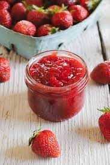

Strawberry Jam

The one and only recipe for Strawberry Jam that you will ever need!
Ingredients
- 900g of washed and de-stemed stawberries
- 4 of white sugar
- 1/4 cup of lemon juice
Steps
- Crush the strawberries in a large bowl in batches until you have 4 cups of mashed berries
- Combine all the ingredients in a large saucepan
- Stir over low heat until the sugar is dissolved
- Increase the heat to high and let the mixture come to boil
- Continue boiling and and stirring often until the mixture reaches 105°C
- After 10 to 15 minutes check if the mixture is to your desired thickness
- Store and Enjoy!
main page